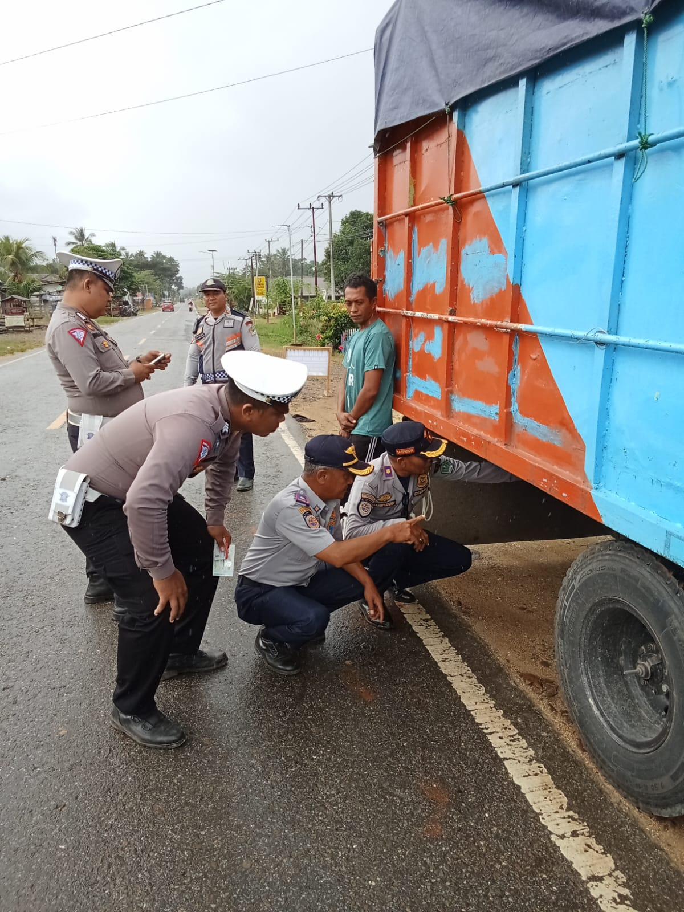

18 Maret 2025
Inspeksi Keselamatan Angkutan Barang di Terminal Unaaha
Tim Dishub melakukan ramp check kelaikan jalan terhadap 12 Truck antar kota antar provinsi menjelang arus mudik. Hasil: 3 Truck dinyatakan tidak laik jalan.
Selesai